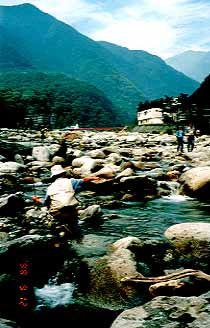
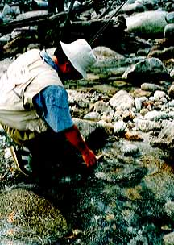
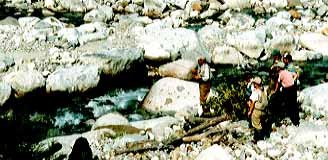
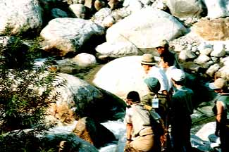
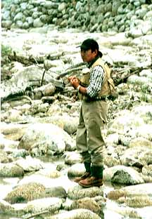
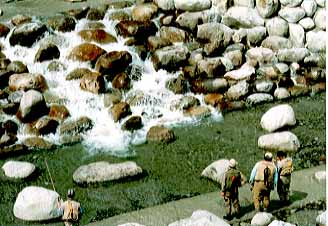
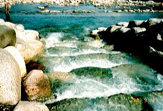
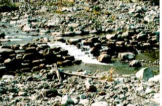
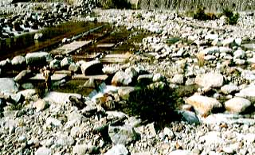

写真集
太田切川フィッシングフェスタ '98 （再録）
1998年９月12日から13日にかけて、長野県は中央アルプス駒ヶ岳の麓、太田切川において、「太田切川フィッシングフェスタ'98」が開催されました。
地元のフライフィッシャーのみなさん、駒ヶ根市、宮田村、天竜川漁協、建設省天竜川工事事務所、そして里見栄正氏、故西山徹氏のご協力で開かれたこのイベントは、「太田切川にキャッチ＆リリース区間を！」という関係者の熱い想いが結集し、２日間の延べ参加者が286名という大盛況となりました。
今回、私もその様子を取材させていただきましたので、当日の写真をご紹介いたします。
なお、詳細なレポートを、
「太田切川フィッシングフェスタ '98」、
「太田切川フィッシングフェスタ '98」 その２
としてまとめましたのでご覧ください。
当日の釣りのようす

駒ヶ岳を望む広々とした太田切川の流れに、参加者の方々は思い思いのポイントで秘蔵のフライをキャストしていました。
ごらんのように大小の岩が点在し、その中に幾筋もの流れがある太田切川は、286名という大勢のフライフィッシャーを抱いてなお、余裕のある風景です。
このキャパシティーとアルプスから流れ出す清冽な水、そして宿泊施設、キャンプ場、駐車場、芝生広場、レストラン、観光案内所、トイレなど充実した周辺環境が太田切川の大きな魅力とアドバンテージとなっています。

みんな釣れてますか？ と聞こうとした矢先にヒットさせたこの方は、きれいなイワナをキャッチしていました。
澄み切った太田切川の流れにご注目！
実行委員会では今回のイベントにあたり、参加者にバーブレスフック・シングルフックの利用を推奨しています。

自然らしい流れが復元された河原で、講師の里見栄正さんが参加者のみなさんに実践を交えながらフライフィッシングをレッスンしています。一人、また一人と参加者が集まって来ました。
素晴らしい秋晴れのもと、誰もが真剣な表情で流麗な里見さんのキャストを食い入るように見つめています。
キャストしたロッドを止めた一瞬後にふわっと手首を送り込むような動作が印象的な里見さんの釣りでした。

あの淀み、こちらのタルミ、そこかしこから、イワナの魚影が見られます。ポイントは無数と言って良いでしょう。
六月の夕方が楽しみだなァ.....

会場本部下のポイントを前に、真剣な表情でフライ選択をする、在りし日の西山徹さんです。
イワナに対する釣り人からのフィッシングプレッシャーもすごいけれど、橋の上からの参加者多数の注目を浴びながら最初のポイントに挑む西山さんのプレッシャーもすごいですよね。

格好のポイントを前に、しぶいイワナを魅惑するフライを探します。
うーん、これでいこうか？
太田切川では、これまで整備されていた渓流魚の天敵とも言える砂防ダムを改修し、自然の石組みを使って緩やかな流れが復元されています。
泡の下からイワナが出てくるような、そんな緊張感の一瞬です。
太田切川の近自然型川づくり
長野県駒ヶ根市を流れる太田切川における近自然型の川づくりの事例をご紹介いたします。
魚道の設置

暴れ川である太田切川には、川の勾配を緩やかに保ち、流れ出す土砂を貯めるために、いくつもの落差の高い砂防ダムが建設されていました。ところが、こうした砂防ダムができてしまうと、ある程度の距離を移動して暮らしているイワナやアマゴにとっては、まったく遡上ができなくなってしまいます。
そこで、建設省天竜川上流工事事務所では、これまであった砂防ダムを改修し、魚が上りやすい通り道ができるように工夫しています。
既設の砂防ダムの改修

高さがおよそ２メートル近くもある砂防ダムには、落差の前面に自然の石が積み上げられて滝のように改修されています。また、中央部には平常水量の時の魚の通り道が設けられています。
平常時の水の流れの確保

太田切川は川幅が広く、平常時の水量ではとても浅い流れになってしまうので、砂防ダムに設けられた魚の通り道へとつながる澪筋がブルドーザーなどで掘削されていました。
これなら渇水になっても魚の住処が確保されるでしょう。
写真集 目次へ
サイトマップ
ホームへ
お問い合わせ